Đã nhập hai sheet vkanim_lam_ngan_thao_b/_f bằng importer #1323. Ảnh chụp nguyên byte từ AO Browser tại /choi?thu=vukhi, thân LPC thật nam/nữ, qua vukhiSetOf và syncPhuLayers. Mỗi ảnh: s → se → e → ne → n; cột cuối Bạch Hổ không có sheet vũ khí, không dựng sheet giả.
Nguồn chụp, mốc, SHA256 và đường dẫn tái tạo · Hồ sơ · Bộ ghép từ atlas riêng
Hai cảnh báo còn giữ: chan-lech 14% ở s/attack khung 1 và se/attack khung 5 (chỉ số từ 0). Cùng phát hiện ở cả hai giới; không có lỗi chặn. Có ảnh mốc 88/321 ms bên dưới để duyệt, không xóa cảnh báo.
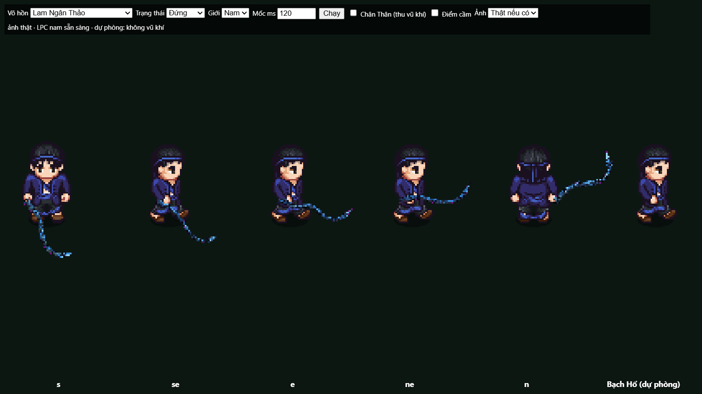
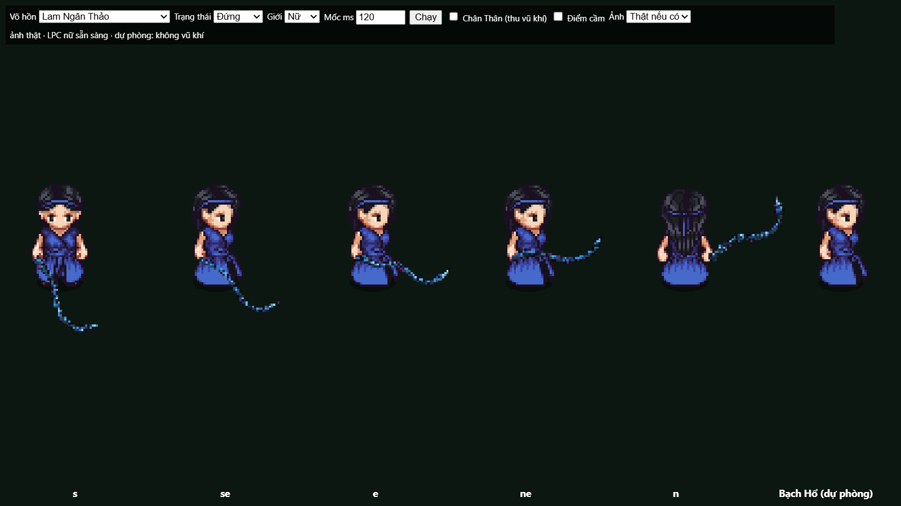
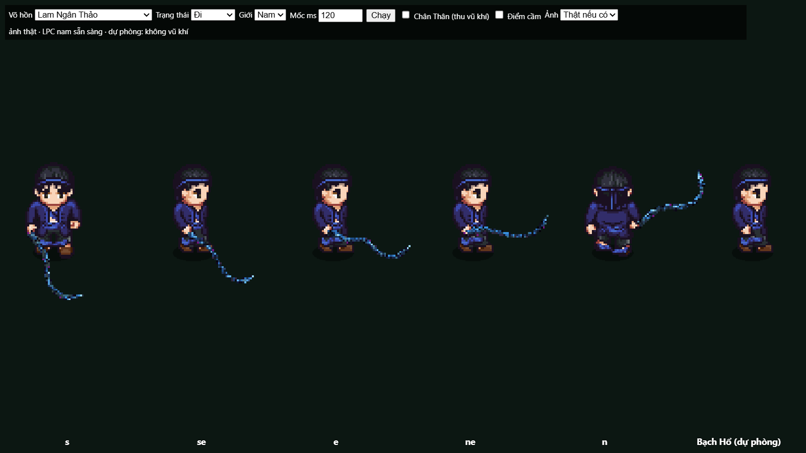
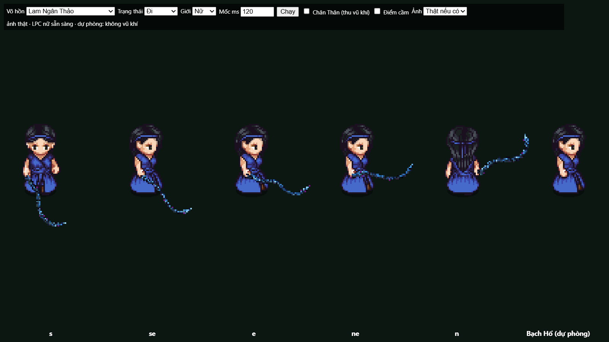
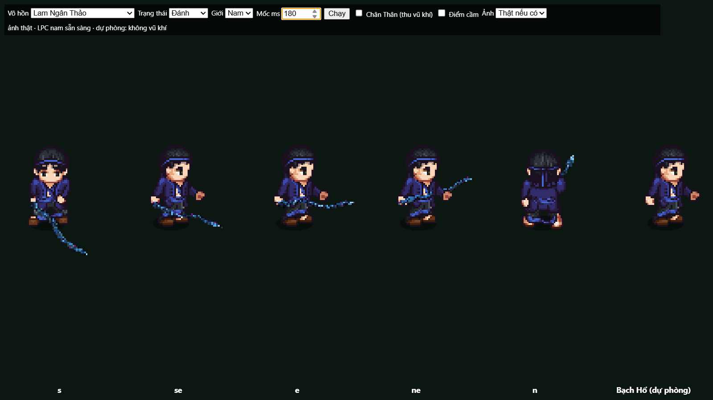
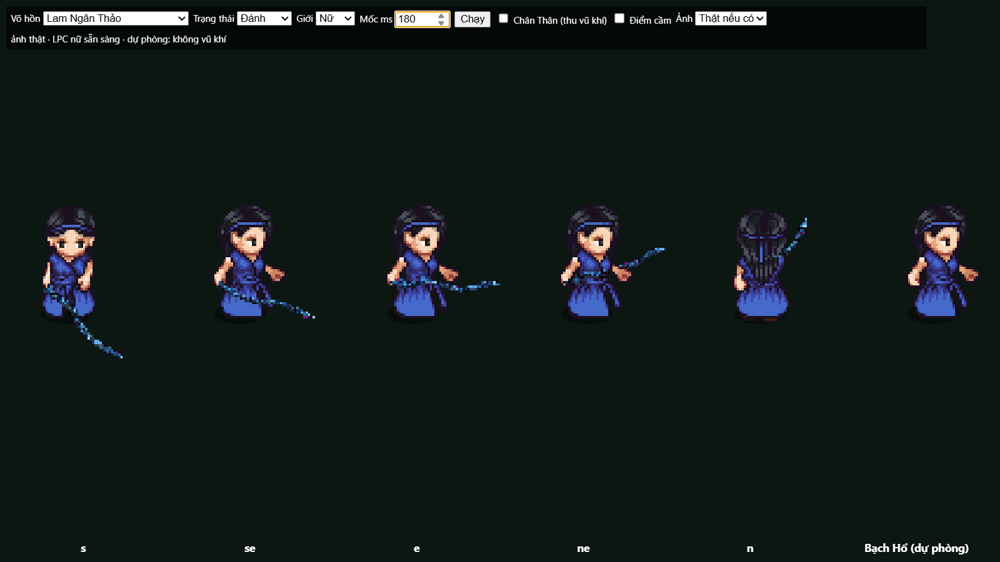
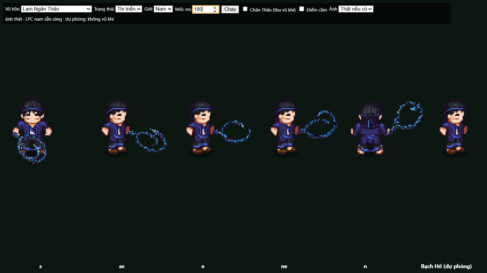
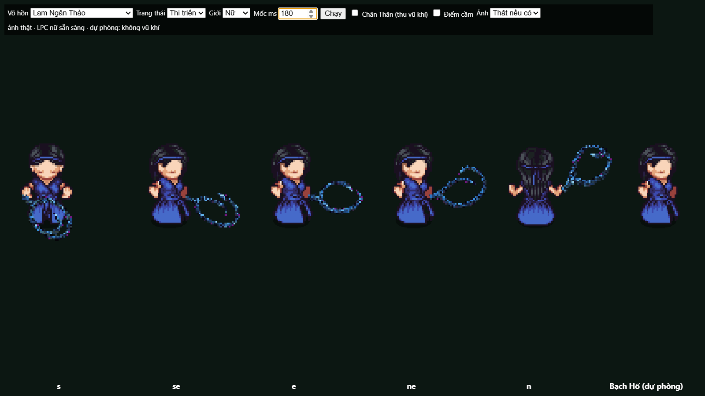
Chọn Bạch Hổ làm võ hồn chính: thanh trạng thái “không có sheet vũ khí”, cả năm nhân vật không cầm vũ khí.
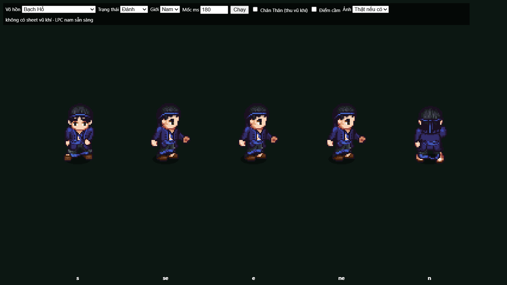
s/attack khung 1, mốc 88 ms
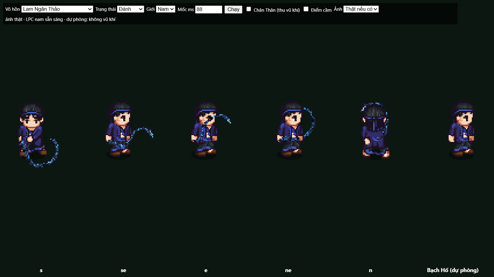
se/attack khung 5, mốc 321 ms
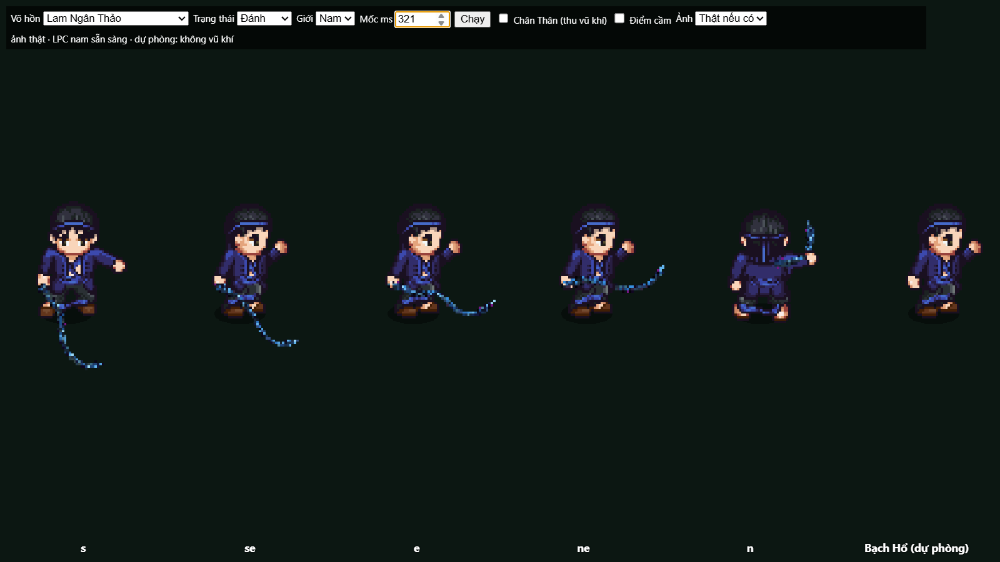
Soát các khung chụp: không thấy tay phụ, đầu dây bị xén hoặc gắn nhầm vũ khí cho Bạch Hổ. Đường chuyển lớp cast và nét của bó dây vẫn dành cho chủ repo duyệt. Ảnh không thay cho kiểm mọi mốc animation.